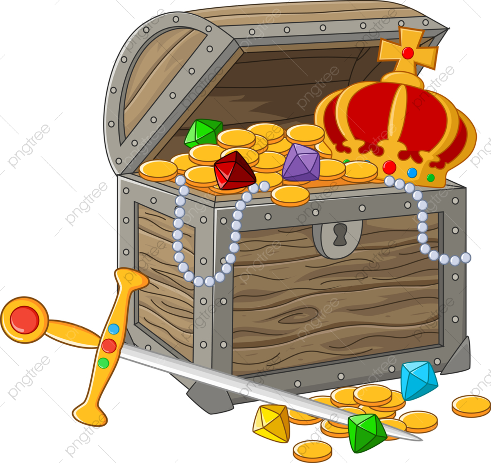

Um dia desses, estava na blibioteca da minha cidade, lá eu achei uma caixa que dentro dela tinha uma carta! Nessa carta, a autora dizia que existia um tesouro escondido na floresta mais densa do local, claro que tinha dicas no caminho para lá, deixadas pela autora, fiquei muito curiosa e decidi ir atrás desse tesouro!
Você decide ir pela direita, caminhando para fora da blibioteca logo avistanto um pequeno parque, você decide procurar a primeira dica
Você decide ir para a esquerda, caminhando para fora da blibioteca logo vendo uma antiga loja da cidade. Na carta, está escrito que essa loja é um ponto de referência que você está perto da dica. Você olha em volta e vê um pequeno parque e o caminho de volta para sua casa.
Você achou um mapa para seguir dentro da floresta! Parabéns! E agora você começa a seguir o mapa, passando por muitos animais, que as vezes te deixa com medo.

Oh não! Você acaba não encontrando a pista, e você acha que apenas uma pegadinha e acaba voltando para casa
Você vai para o parque e acaba vendo os bancos e os arbustos. Onde você vai procurar?
Você acha que apenas uma pegadinha e acaba voltando para casa
Você decide continuar e ser extremamente corajosa, você caminha mais um pouco e quanto menos você espera...
Você acaba ficando com muito medo e decide ir para sua casa, para ficar segura.
Parabéns! Você achou o tesouro, são muitas joías! Você quer pegar?
Muito bem, você deixa as joías na onde estão e vai embora apenas com uma fotografia, muitos acreditam em você quando você mostra a fotografia, porém muiutos desacreditam.
Você decide pegar para você, alegando que que você achou algo perdido, porém muitos não acreditaram, mas alguns acreditam e faz de você alguém famoso!